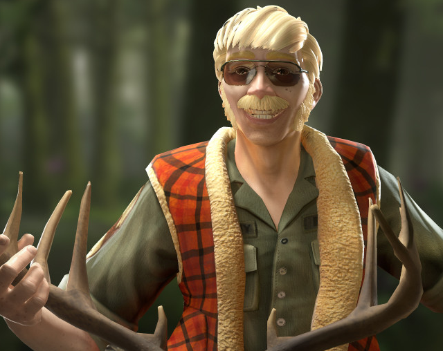
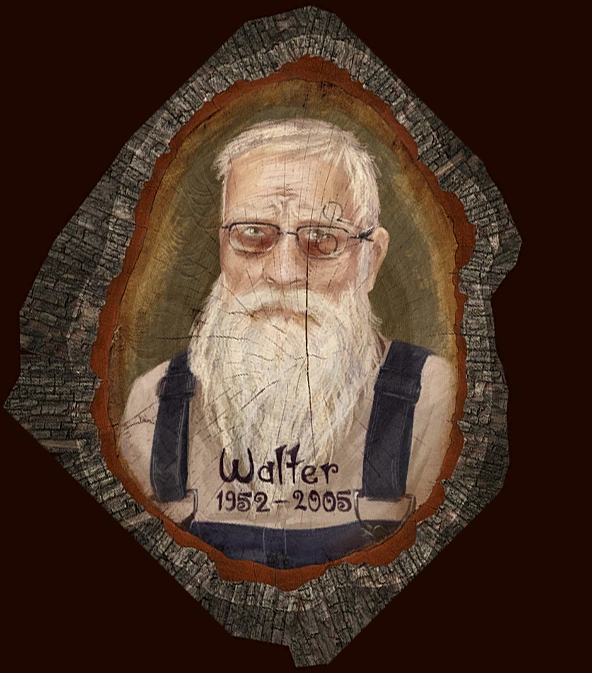

A video game made in 2017 developed by Giant Sparrow
The story follows a pregnant 17 year old girl who revisits her childhood home she left years ago. She now has to go through the house to discover different family members and a ’family curse’ that plagued them all.
It starts with Edie & Sven, Edie lives on to 93 and her husband Sven dies while building a slide, they have a daughter named Molly who died of food poisoning at 10, another daughter named Barbara who’s death remains ambiguous but is lead to be believed a murder at 16, two twin boys Calvin and Sam, Calvin dies by swinging off a cliff at 11 and Sam falls off a cliff at 33, however Sam had 3 kids before that. And Walter who was hiding away in a bunker under the house, getting hit by a train at 57. Then there are Sam’s kids, Gregory who died an infant being left unattended in a bathtub, Gus was crushed by a totem pole at 13 and Dawn lived to her 40’s and had 3 kids as well, Milton who went missing at 8 and Lewis who ended his life at 22. Dawn took Edith (her third child) and left the house, Edie died after they left, Dawn got sick and passed, leaving us with Edith, we are lead to believe we are playing her up until the end when you realize that Edith passed at 17 giving birth to her son, and the game is actually about her son Christopher discovering the family’s secrets.
Edie was not all an innocent woman, she was known to like fame, she profited off of her kids deaths and trauma. She kept a halloween type comic of the death of her daughter Barbara, which she is to be believed to have had a part in because the comic had the perfect layout of the house and knew things that only a family member of the house would know. She also did an interview which led to news articles about a mole man living under the house knowing that it was her son Walter who was severely traumatized by the death of his sister Barbara that he hid away for 30 years. She also had Sam sleep in his shared room with Calvin for 7 years even though he died, leaving him to look at his dead brother’s stuff and empty bed. She also had a weird sense of humor, joking about her deceased husband Sven and how he died.
Edie had said that there was a family curse and that most of the Finch family died at young ages, e.g average age of death being 19, but in fact the ’curse’ was little at fault, although never stated, it’s obvious to me that it wasn’t all a curse and that the curse was something Edie made up to cope with the death of her kids and the fact that she was neglectful towards them. Molly was sent to her room without dinner resulting in her being so hungry she ate a mixture of things that killed her, her not watching Calvin leading to him jumping off a swing and off a cliff, she ended up having his twin brother Sam sleep in their shared room for 7 years after Calvin’s passing. Walter who witnessed Barbara’s death and was so scared he hid himself away, never getting any real help. But it isn’t just Edie who was neglectful, Edie’s son Sam and his Wife Kay neglected their kids as well, Kay left Gregory alone in the bath causing his death and Sam leaving Gus alone on a windy day which caused the totem pole to fall on him. Because they all believed in a family curse so much it actually became one.
The Finches not only suffered from neglect but other things too, Lewis suffered from Depression, addiction and Maladaptive Daydreaming Disorder, he always imagined himself as someone better, he was unhappy with his own life and that caused him to take his own. Walter suffered from Agoraphobia which is an anxiety disorder in which people fear places/situations that would cause you to panic resulting in him hiding away. Those are pretty obvious looking at the characters in the game, everyone else is unclear, the characters had really wild imaginations and suffered a lot of grief after their family members died.
Certain characters do have things to say about their dead loved ones, Sam wanting to remember his brother and talking about how he admired the way he made up his mind and that he promised never to be afraid again. Sam then talking about the way Gregory was always happy and had so much imagination and how Gregory reminded him of Calvin. Dawn talking about her brother gus, about the day he died and how it played out, how they found him. Lewis’s therapist talking about what he imagined. Walter self monologuing about how lonely he was and how he was tired of being afraid. The game gives insights into either how the characters themselves felt or how the others around them felt during their deaths, these insights is what makes this game more impactful to players and viewers. There are more details about this on the second page which you can reach if you go to the bottom.
This game impacted lots of people, including me. This game shows a story of a family, a family full of people who were neglectful and ill, a grieving family, but still a family. It shows how short life is and that it can be taken at any second. This game can be relatable to others in certain aspects.
Molly is the little girl who died two days after her 10th birthday. She was sent to her room without dinner, the reason for being sent to her room was to be believed that she ate all her halloween candy before dinner. In her last moments she wrote a diary entry about her turning into various animals and eating other animals like a predator. I speculated that because she ate the gerbil food, and the toothpaste with enough fluoride to kill a kid and Holly berries which are also deadly that she was hallucinating all of these things and was later probably found dead in her bed. Even though Dawn wanted to move on from the family’s history and past she named a stray cat she found outside Molly which is the first thing Molly hallucinates herself to be. Molly had an intense imagination and had a love for animals which is made obvious by the toys and posters in her room, she didn’t seem to have anything going on in her life aside from the slight neglect of her parents which resulted in her death.

She was born on halloween and died on halloween 16 years later, her death still remains unclear to the people playing this game because it was introduced in the form of a horror comic. She was a child actor known for her iconic scream, years later the acting thing didn’t work out and she was working at a diner, she was invited on halloween to a horror convention to do her famous scream so she practiced with her boyfriend Rick who was on crutches. She couldn’t make it though because her father had an accident leaving her to babysit her little brother Walter. Later that night she heard Walter yelling and went to check up on him when she saw this killer trying to attack her, with the crutch she knocked him over the railing of the second floor onto the floor, when she got down there he was gone. She hears a knock on the door and it’s people dressed up as monsters who were from the convention who came to surprise her, unfortunately she realized the monsters were real and they ate her, only leaving her ear behind in her music box. The comic then shows a young traumatized Walter who witnessed the tragedy. In this universe actual monsters aren’t real and this is a fake representation of what actually happened, so you can see why people can’t figure out what really happened. Rick goes missing too and it is to be believed that he killed her, or it was actually a gang of hoodlums who broke in, or it was her mother who accidentally caused the accident, or maybe she accidentally fell off the second floor and died. We will never know the truth behind Barbara’s death, this was probably made to be like this so people could theorize things about it and have people keep talking about the game. All she wanted was to be remembered and Edith thought that keeping the comic book was Edie’s way of doing that.
After the death of Barbara, Calvin never wanted to be afraid again when it came to adventure, he always wanted to be an astronaut, loved the universe and loved adventure. He was even a little reckless when it came to getting what he wants, you can tell he was reckless as evidenced by the cast on his leg. He swung on the pair of swings fast and didn’t think about the consequences that would happen. The swing they had outside lead to a cliff, he thought he could swing around in a loop and fly which he managed to do, he jumped off of the swing and he fell to his death, leaving Sam without his twin,. Sam and Calvin were twins who shared a room, even after Calvin’s death, for 7 years Sam slept in that room.
An adorable baby with a huge imagination, Gregory was only 1 years old at his time of death and died a month before his second birthday, he was in the bathtub filled with toys and such, he was being taken care of by his mother Kay, also known as Sam’s ex wife, it is shown they were getting a divorce before Gregory died through the divorce papers which were dated before the incident. Kay got calls from Sam a numerous amount of times through Gregory’s part of the game, hearing her yell at him a lot. After Kay drains the tub she gets another call from Sam who she has already divorced at this time, she goes to answer it, once again yelling at him to stop talking. Gregory finds a way to turn the faucet on again and while Kay is on the phone, Gregory has passed on due to drowning. During this time you hear dialogue from Sam talking to Kay about Gregory, how he could feel him slipping away due to his big imagination, how happy he was all the time and how reminded him of his deceased brother Calvin.
A rebellious teenager who was 13 at the time of his death, He liked to fly kites and such, he was upset that his father was remarrying another woman and refused to be a part of the wedding, then the wind picked up and things started to blow around, there was a tent that blew away and hit a big totem pole that tipped over and fell on top of Gus which crushed him to death. Gus hated the idea of his dad remarrying another woman which is why he excluded himself from the wedding ceremony outside, other than that we don’t know anything other than he was a troublemaker.

There was always a Finch in every generation who lived long enough to have kids, and that person was Sam although he was only 18 when he had Dawn who is his eldest daughter. Sam enlisted into the marines and was a man who faced problems like mortality head on, he was a survivalist who probably wanted his kids to learn how to survive after his other family members couldn’t. He, much like his mother Edie, was also not the best parent and neglected his kids, e.g. His son Gus, resulting in his death, and when his daughter Dawn didn’t want to go hunting and shoot the deer. He was the photographer of the family, wanting to capture the moments with pictures all the time. When he and Dawn went out hunting he made her shoot a deer when she didn’t want to, however when she did he wanted to take a picture, so he set up a camera and went to the cliff with the dead deer and his daughter for the photo. The deer turned out to be alive and kicked Sam off of the cliff resulting in his death. The camera caught him falling in the photo and his story is told through pictures you have to flip through. He, just like his brother, also fell off a cliff causing their deaths. Edith says that although they don’t have much in common, Dawn and Sam were both intense and started their families quickly, trying to escape the curse. It is shown that he feels guilty about Calvin’s death due to him saying that if he hadn’t said going around on the swing was impossible that he might have lived. He is also guilty about Gregory because he says that maybe if he hadn’t called that night then Kay wouldn’t have left Gregory unattended and he would have lived. He and Dawn both go through guilt in this game due to losing their siblings and kids.
Milton was very passionate about art and disappeared in 2003, no one knows what happened, the only thing you can find is a little flip book showing him opening a door and leaving to go somewhere, he was an artist and drew things around the house. He was revealed to be the same Milton from the game "The unfinished swan" made by the developers "Giant Sparrow" this game was released in 2012 wherase Edith Finch released in 2017. Although due to the strangeness of the unfinished swan it is commonly theorized that he was in the walls of the house and died there of suffocation, this is because he drew pictures inside the secret passageways of the house but they seem to stop at a certain point. In the unfinished swan he also has a blonde haired son named Monroe, Milton never appears in the game but is referred to as "The King". We never get a very close look at how Milton felt in this game, he knew things and left before the curse got him or so we assume. It was shown he had a big imagination and was passionate about art.

After witnessing the murder/death of his older sister Barbara at 8 years old, Walter was traumatized by it, once he turned 22 he hid in an underground bunker in the house and developed an extreme fear of the family curse. He would hear a constant roaring and would be scared by it, not thinking he would last very long. He was hiding away for 30 years until he grew sick of it and left at 52, instead of exiting through the door he dug a hole through the wall of the bunker and left through here, little did he know it lead to train tracks which lead to him getting hit by a train at 52. Walter did not know that the roaring he kept hearing was the sound of the train moving, this train was probably delayed due to Walter not hearing it like usual, in the game the train tracks are broken and abandoned most likely due to Walter’s death. He talks about how he knows the monster is out there that killed Barbara, Molly and Calvin meaning he must not know about all of the other deaths that happened after he hid away, he probably didn’t even know Sam had kids who had kids. It is to be assumed that Walter feels guilty about his dad’s death because he died making a dragon shaped slide he was making for Walter, we can assume this because he died on Walter’s 12th birthday. When you are in Walter’s perspective in the game the calender says it is 1968 which means it was 8 years after Barbara died and 4 after his dad died making him 16 in the bunker. It was assumed that it was made for Walter by his dad so he could be alone and he stayed there permanently after his dad died. He is also outlived all his siblings.
Lewis started struggling when his little brother Milton went missing,he blamed himself for it and he locked himself in his room a lot and developed an addiction. Eventually his mother, Dawn, decided to get his life going again and got him a job at the cannery where he would take fish and put it in the chopper which would cut the fish’s heads off. He developed maladaptive daydreaming disorder which had him daydreaming excessively while doing his job, this disorder can interfere with work, and for Lewis it didn't seem to disrupt his rhythm but it would eventually. He had also been going to a therapist which tried to work with him and his problems. He started to daydream about a better version of himself, a king who ruled over people who loved and adored him. He was so immersed that he became depressed he couldn’t be that better version of himself. The depression unfortunatly took over and he put his head in the chopper, his death being a suicide.
Edie died right after Dawn took Edith and left the house, it was presumed to be of either old age due to the fact she is in her 90’s or because of suicide due to her convenitatly dieing as soon as Dawn left with Edith. She was a woman who enjoyed fame and was neglectful to her kids, resulting in some of their demise. Dawn perceived her as an instigator of doom who is responsible for most of the family’s deaths due to her believing in a curse which helps justify her mistakes and losses. Edith however perceives her as a woman who accepts death is a natural thing and shouldn’t be feared. Because she was surrounded by death Edie wanted to immortalize her family and although Dawn had their rooms sealed off they still had shrines in each of them.

Dawn is the mother of Edith, Lewis and Milton and is the daughter of Sam finch, when she was a kid she went hunting with her dad and had to shoot a deer which distressed her very much that she started to cry. It is shown that Sam may not be the most amazing father but she cares deeply about her family. During that hunt she had to witness his demise. She, much like her father, had to sleep in the same room as her sibling’s empty beds because they died at young ages. Dawn was the only one of her siblings to grow up and have kids, unfortunately she got sick when Edith was 17 and passed away at 48. She was also the one to drag Edith out of the house and move away, probably due to the curse which already took her other two kids. Dawn was more into reading than hunting, she had a more gentle personality. Much like her father she became more cautious of the curse, Dawn especially became more apprehensive and cautious after her father’s death and distanced herself from the past and the deaths that occured. Dawn became more emotionally reserved after her own children’s death’s and looked towards religion and spirituality to guide her and help her cope with their death’s. Edie and Dawn clashed often about the past, Edie wanted it memorialized for the future generations and Dawn wanted to leave it behind and forget about it. Dawn tried to seal the the doors of their dead relatives but Edie put peepholes in them to see the shrines. Dawn thought that because Edie believed so much in a curse and remembering the tragic history that it shaped their future and sealed their demise.
Edith never knew too much about her other family members since when she was a little girl her mother took her and moved away from the cursed house, she became pregnant and visits her childhood home to uncover all the secrets and family members who were once here, or so you are made to believe. It becomes known at the end of the game that Edith died giving birth to her son Christopher at 17. He is the one to return to the house and discover the family that once lived in this house. Edith was described to have an anti-nihilistic view on life due to Edie’s behavior, being and Anti-Nihilist is someone who understands how terrible life is and instead of going into despair they create a meaning to their life. Edith used to be stubborn as evidenced by her not giving Edie’s book to Dawn and by not wanting to leave Edie behind, as she grew up she became more mature and thinks about the significance about each of the family member’s death’s. If she turned out to be a boy then Dawn would have named her Gus after her younger brother. She didn’t clash with Edie like Dawn did, they got along and it resulted in Edith understanding Edie more than Dawn, not viewing her like a monster like her mother did.
The game developers of Giant Sparrow worked hard on their game that is not only entertaining but has a deeper story behind it
My first website on What remains of Edith Finch can be accessed here as a table of contents
Return to the top of the page.